Figure Index
Each entry links to the full page image because this OCR PDF stores pages as scanned images.
Figure 1 - page 005
{kind=link}
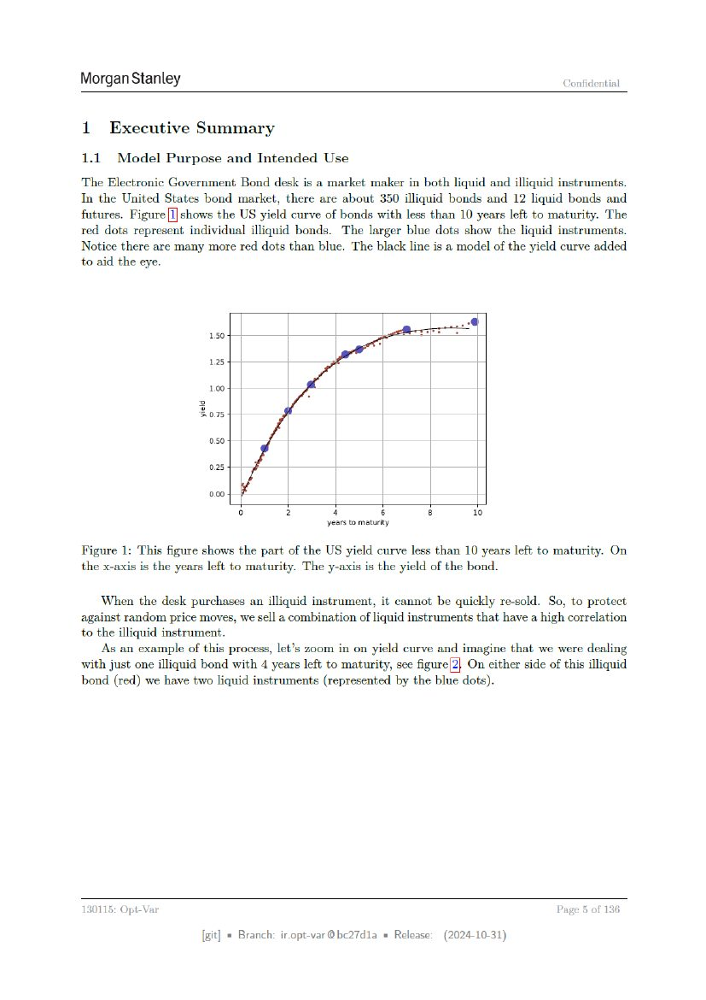
Figure 1: This figure shows the part of the US yield curve less than 10 years left to maturity. On the x-axis is the years left to maturity. The y-axis is the yield of the bond.
Figure 2 - page 006
{kind=link}
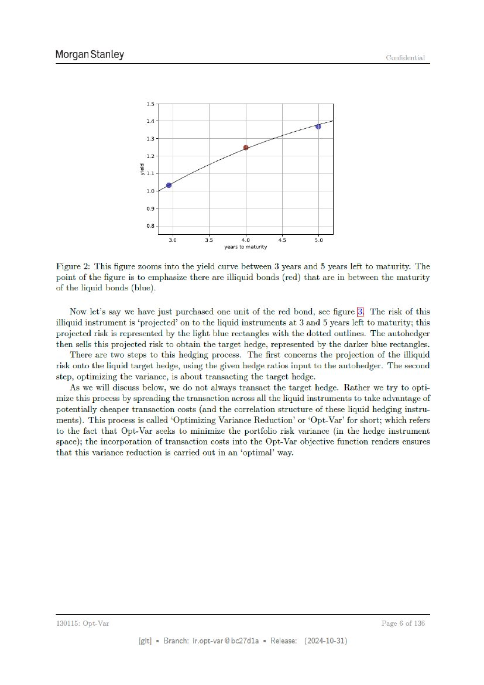
Figure 2: This figure zooms into the yield curve between 3 years and 5 years left to maturity. The point of the figure is to emphasize there are illiquid bonds (red) that are in between the maturity of the liquid bonds (blue).
Figure 3 - page 007
{kind=link}
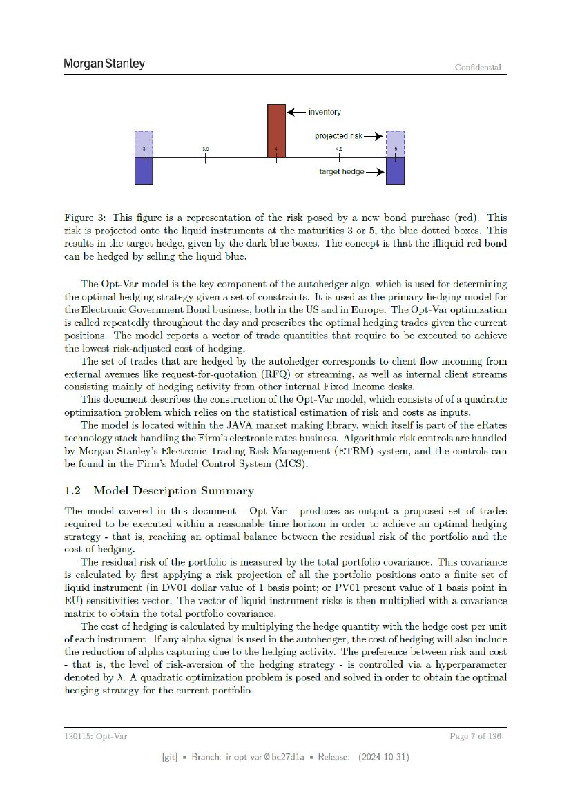
Figure 3: This figure is a representation of the risk posed by a new bond purchase (red). This risk is projected onto the liquid instruments at the maturities 3 or 5, the blue dotted boxes. This results in the target hedge, given by the dark blue boxes. The concept is that the illiquid red bond can be hedged by selling the liquid blue.
Figure 4 - page 009
{kind=link}
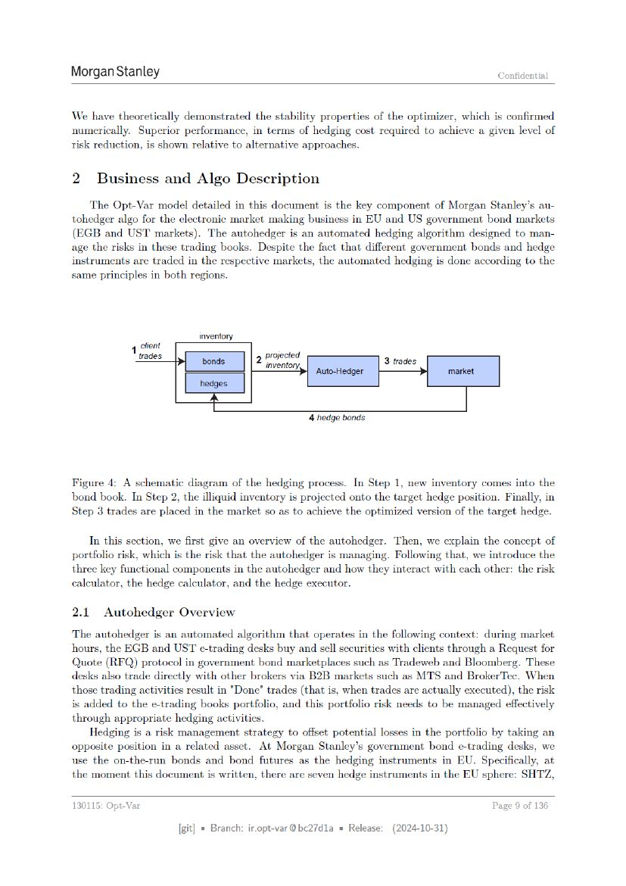
Figure 4: A schematic diagram of the hedging process. In Step 1, new inventory comes into the bond book. In Step 2, the illiquid inventory is projected onto the target hedge position. Finally, in Step 3 trades are placed in the market so as to achieve the optimized version of the target hedge.
Figure 5 - page 010

Figure 5: Illustration of how the pre-determined hedge ratios are used to project the Italian bond position IT0005534141 to the space of bond futures.
Figure 6 - page 011

Figure 6: UST input and output volumes per minute on 05/22/23.
Figure 7 - page 012

Figure 7: UST daily input and output volumes between 05/07/23 and 06/07/23
Figure 8 - page 012
Figure 8: Opt-Var US daily input and output volumes ratio between 05/07/23 and 06/07/23
Figure 9 - page 013

Figure 9: Pareto frontier of hedging ratio and variance. Each dot corresponds to the value of \ nearby.
Figure 10 - page 013
Figure 10: Pareto frontier of hedging cost and variance. Each dot corresponds to the value of nearby.
Figure 11 - page 014

Figure 11: Portfolio trajectory for the toy model We can also represent in Figure[12] these trajectories in a two-dimensional space where the first coordinate is the position in the first bond and the second coordinate the position in the other bond. We display in red the area where the system converges, which can be explictly computed.
Figure 12 - page 014
Figure 12: Two example trajectories starting from (50000, 0) for the green one and (-45000, 75000) for the purple one. The correlation value is p = 0.8, a = 0.
Figure 13 - page 015
{kind=link}
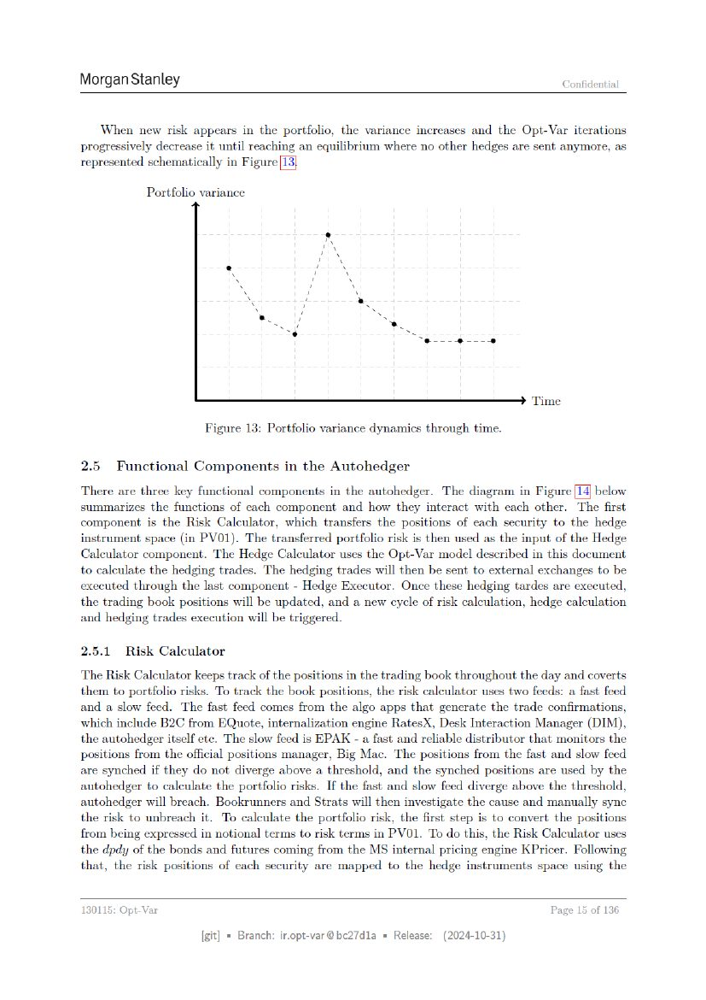
Figure 13: Portfolio variance dynamics through time.
Figure 14 - page 016

Figure 14: Three key functional components in the autohedger
Figure 15 - page 031

Figure 15: Linear relationship between VWAP cost and trade size (EU), observed using data from 2023-03-01 to 2023-05-31
Figure 16 - page 032

Figure 16: Linear relationship between effective trading cost and trade size for FLG, from 2024- 02-01 to 2024-02-29 US
Figure 17 - page 033
{kind=link}
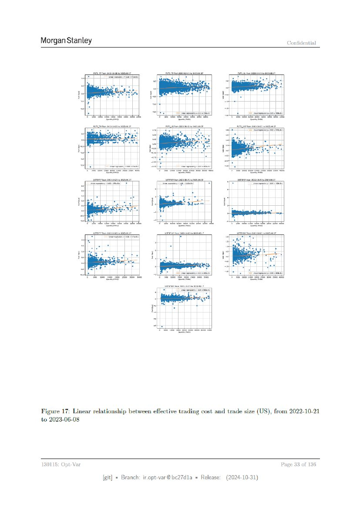
Figure 17: Linear relationship between effective trading cost and trade size (US), from 2022-10-21 to 2023-06-08
Figure 18 - page 036

Figure 18: Schematic of a particular case of inconsistent box-constraints. The first constraint (red) is enforced; the second constraint (blue) is minimally relaxed such that the intersection is non-empty (dashed blue). As the diagram indicates, in this case we have Ly = U; and Uj = Up.
Figure 19 - page 043

Figure 19: Java and Python Convergence Comparison
Figure 21 - page 045

Figure 21: CRB Java and Python Convergence Comparison with Set A
Figure 23 - page 045
Figure 23: CRB Java and Python Convergence Comparison with Set B
Figure 20 - page 047
{kind=link}
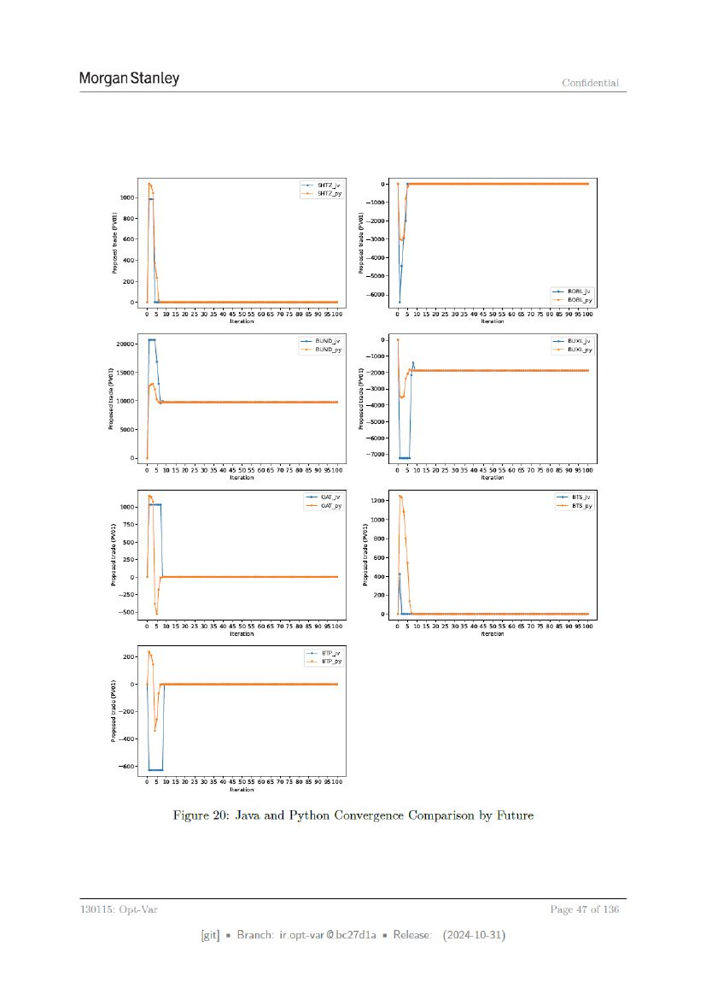
Figure 20: Java and Python Convergence Comparison by Future
Figure 22 - page 050
{kind=link}
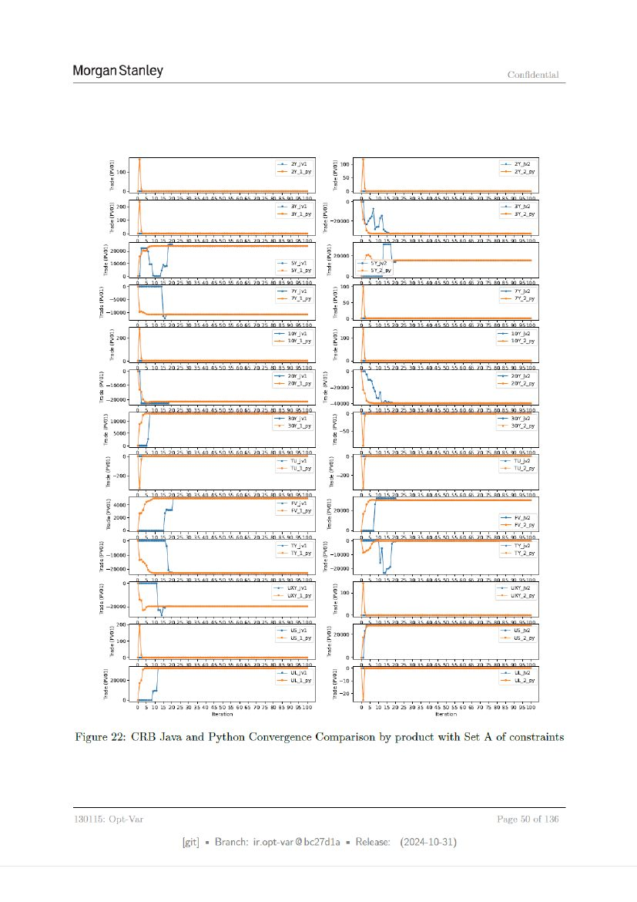
Figure 22: CRB Java and Python Convergence Comparison by product with Set A of constraints
Figure 24 - page 051
{kind=link}
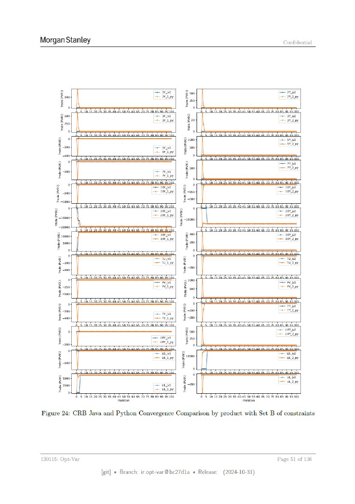
Figure 24: CRB Java and Python Convergence Comparison by product with Set B of constraints
Figure 25 - page 056

Figure 25: Two example trajectories starting from (50000, 0) for the green one and (-45000, 75000) for the purple one. The correlation value is p = 0.8 and the infinite horizon cost is not used.
Figure 26 - page 056
Figure 26: Two example trajectories starting from (50000, 0) for the green one and (-45000, 75000) for the purple one. The correlation value is p = 0.9 and the infinite horizon cost is not used.
Figure 27 - page 057

Figure 27: Two example trajectories starting from (50000, 0) for the green one and (-45000, 75000) for the purple one. The correlation value is p = 0.8 and the infinite horizon cost is used.
Figure 28 - page 057
Figure 28: Two example trajectories starting from (50000, 0) for the green one and (-45000, 75000) for the purple one. The correlation value is p = 0.9 and the infinite horizon cost is used.
Figure 29 - page 060

Figure 29: Inventories in PV01 through the repeated calls to Opt-Var for a non admissible initial portfolio with inconsistent constraints
Figure 30 - page 061
{kind=link}
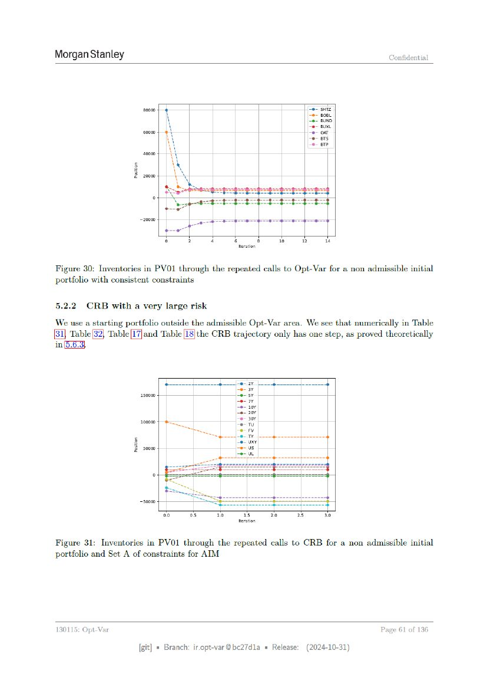
Figure 30: Inventories in PV01 through the repeated calls to Opt-Var for a non admissible initial portfolio with consistent constraints
Figure 31 - page 061
Figure 31: Inventories in PVO1 through the repeated calls to CRB for a non admissible initial portfolio and Set A of constraints for AIM
Figure 32 - page 063

Figure 32: Inventories in PVO1 through the repeated calls to CRB for a non admissible initial portfolio and Set B of constraints for AIM
Figure 33 - page 066

Figure 33: Inventories in PVO1 through the repeated calls to Opt-Var for a non admissible initial portfolio with inconsistent constraints and incoming flow after step 2
Figure 34 - page 067
{kind=link}
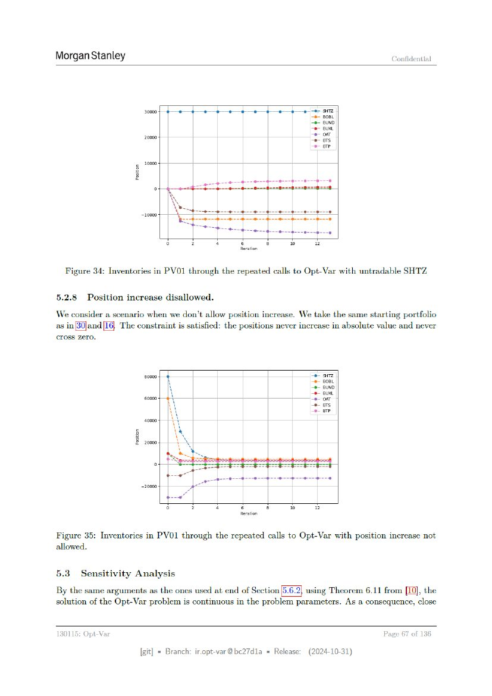
Figure 34: Inventories in PVO1 through the repeated calls to Opt-Var with untradable SHTZ
Figure 35 - page 067
Figure 35: Inventories in PV01 through the repeated calls to Opt-Var with position increase not allowed.
Figure 36 - page 068

Figure 36: First hedge order in PVO1 as a function of A, the risk-aversion parameter.
Figure 37 - page 069

Figure 37: Terminal inventory in PVO1 through the repeated calls to Opt-Var as a function of A, the risk-aversion parameter.
Figure 38 - page 069
Figure 38: Terminal inventory in PVO1 through the repeated calls to CRB as a function of \1, the CRB AIM risk-aversion parameter with Set A of constraints.
Figure 39 - page 070

Figure 39: Terminal inventory in PVO1 through the repeated calls to CRB as a function of \1, the CRB AIM risk-aversion parameter with Set B of constraints.
Figure 40 - page 070
Figure 40: Terminal inventory in PVO1 through the repeated calls to CRB as a function of \s, the client risk-aversion parameter with Set A of constraints.
Figure 41 - page 071

Figure 41: Terminal inventory in PVO1 through the repeated calls to CRB as a function of \s, the client risk-aversion parameter with Set B of constraints.
Figure 42 - page 071
Figure 42: Terminal inventory in PVO1 through the repeated calls to CRB as a function of A, AIM risk-aversion parameter with Set A of constraints.
Figure 43 - page 072
{kind=link}
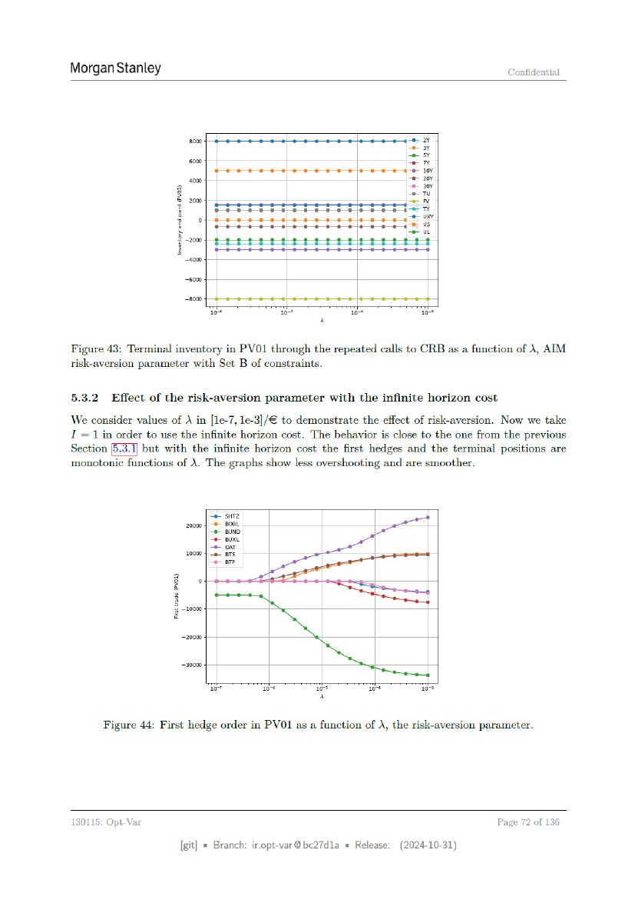
Figure 43: Terminal inventory in PVO1 through the repeated calls to CRB as a function of A, AIM risk-aversion parameter with Set B of constraints.
Figure 44 - page 072
Figure 44: First hedge order in PVO1 as a function of A, the risk-aversion parameter.
Figure 45 - page 073

Figure 45: Terminal inventory in PVO1 through the repeated calls to Opt-Var as a function of A, the risk-aversion parameter.
Figure 46 - page 074

Figure 46: First hedge order in PVO1 as a function of L, a multiplier in front of the cost. vector.
Figure 47 - page 074
Figure 47: Terminal inventory in PV01 through the repeated calls to Opt-Var as a func- tion of LZ, a multiplier in front of the £cost vector. The cost vector is C = LC with C = (0.22 0.17 0.08 0.1 0.12 03 0.15) .
Figure 48 - page 075
{kind=link}
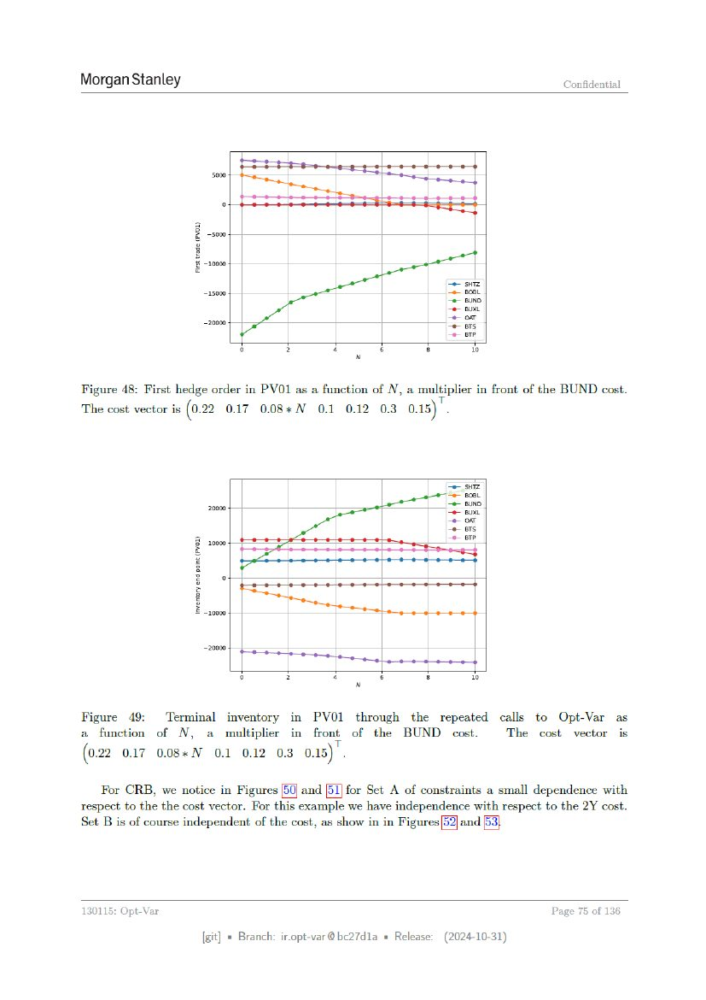
Figure 48: First hedge order in PV01 as a function of N, a multiplier in front of the BUND cost.
Figure 49 - page 075
Figure 49: Terminal inventory in PVO01 through the repeated calls to Opt-Var as a function of N, a multiplier in frontt of the BUND cost. The cost vector is (022 0.17 0.08%N 0.1 0.12 03 0.15) .
Figure 50 - page 076

Figure 50: Terminal inventory in PVO1 through the repeated calls to CRB as a function of as a function of L, a multiplier in front of the cost vector, with Set A of constraints. The cost vector is C =LC with C = 0.08 * np.ones(13).
Figure 51 - page 076
Figure 51: Terminal inventory in PVO1 through the repeated calls to CRB as a function of L, a multiplier in front of the cost vector, with Set B of constraints. The cost vector is C = LC with C = 0.08 * np.ones(13).
Figure 52 - page 077

Figure 52: Terminal inventory in PVO1 through the repeated calls to CRB as a function of as function of N, a multiplier in front of the 2Y cost, with Set A of constraints.
Figure 53 - page 077
Figure 53: Terminal inventory in PVO1 through the repeated calls to CRB as a function of N, a multiplier in front of the 2Y cost, with Set B of constraints.
Figure 54 - page 078

Figure 54: First hedge order in PVO1 as a function of K, a multiplier in front of the quadratic cost matrix. The quadratic cost matrix verifies M = KM + ;Apdiag(Z) with M = diag(1740, 610, 397, 996, 961, 4846, 1699).
Figure 55 - page 078
Figure 55: Terminal inventory in PV01 through the repeated calls to Opt-Var as a function of K, a multiplier in front of the quadratic cost matrix. The quadratic cost matrix verifies MW = KM + 7Apdiag(Z) with M = diag(1740, 610, 397, 996, 961, 4846, 1699).
Figure 56 - page 079

Figure 56: First hedge order in PVO1 as a function of U, a multiplier in front of the BUND quadratic cost. The quadratic cost matrix verifies M = M + Ajdiag(S) with M = diag(1740, 610, 397 « U, 996, 961, 4846, 1699).
Figure 57 - page 079
Figure 57: Terminal inventory in PVO1 through the repeated calls to Opt-Var as a function of U, a multiplier in front of the BUND quadratic cost. The quadratic cost matrix verifies M = M + ppdiag(S) with M = diag(1740, 610, 397 « U, 996, 961, 4846, 1699).
Figure 58 - page 080

Figure 58: First hedge order in PVO1 as a function of ay, the price signal for SHTZ.
Figure 59 - page 080
Figure 59: Terminal inventory in PVO1 through the repeated calls to Opt-Var as a function of a, the price signal for SHTZ.
Figure 60 - page 081

Figure 60: Terminal inventory in PV01 through the repeated calls to CRB as a function of a, the price signal for 2Y.
Figure 61 - page 081
Figure 61: Terminal inventory in PV01 through the repeated calls to CRB as a function of a, the price signal for 2Y.
Figure 62 - page 083
{kind=link}
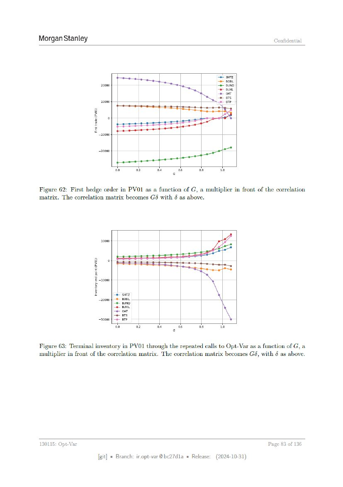
Figure 62: First hedge order in PVO1 as a function of G, a multiplier in front of the correlation matrix. The correlation matrix becomes Gé with 6 as above.
Figure 63 - page 083
Figure 63: Terminal inventory in PVO1 through the repeated calls to Opt-Var as a function ofG, a multiplier in front of the correlation matrix. The correlation matrix becomes G6, with 5 as above.
Figure 64 - page 084
{kind=link}
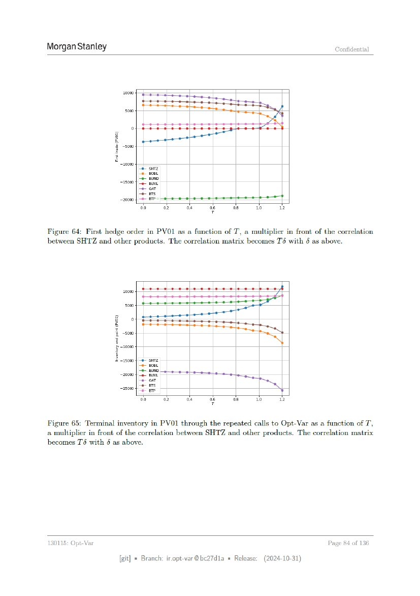
Figure 64: First hedge order in PVO1 as a function of T, a multiplier in front of the correlation between SHTZ and other products. The correlation matrix becomes Td with 6 as above.
Figure 65 - page 084
Figure 65: Terminal inventory in PVO1 through the repeated calls to Opt-Var as a function of T, a multiplier in front of the correlation between SHTZ and other products. The correlation matrix becomes T6 with 6 as above.
Figure 66 - page 085
{kind=link}
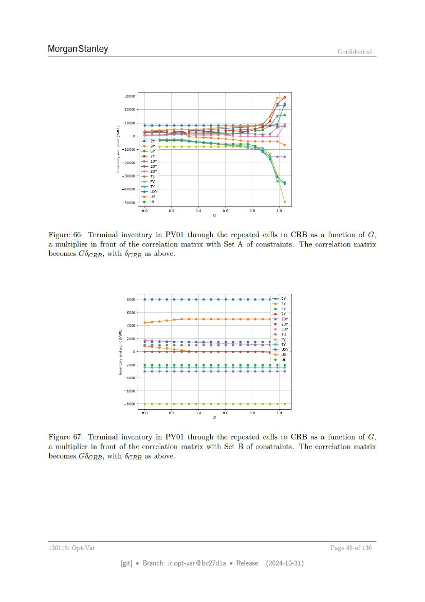
Figure 66: Terminal inventory in PVO1 through the repeated calls to CRB as a function of G, a multiplier in front of the correlation matrix with Set A of constraints. The correlation matrix becomes Gécrp, with dcrp as above.
Figure 67 - page 085
Figure 67: Terminal inventory in PVO1 through the repeated calls to CRB as a function of G, a multiplier in front of the correlation matrix with Set B of constraints. The correlation matrix becomes Gécrp, with dcrp as above.
Figure 68 - page 086

Figure 68: Terminal inventory in PVO1 through the repeated calls to CRB as a function of T, a multiplier in front of the correlation between 2Y and other products with Set A of constraints. The correlation matrix becomes Tégrg with dcpp as above.
Figure 69 - page 086
Figure 69: Terminal inventory in PVO1 through the repeated calls to CRB as a function of T, a multiplier in front of the correlation between 2Y and other products with Set B of constraints. The correlation matrix becomes Técre with dcrp as above.
Figure 70 - page 087

Figure 70: Comparison of the objective function values after hedging using Opt-Var and simple hedging strategy for different risk aversion \ values. The objective function is expressed as F, described in sectio
Figure 71 - page 088

Figure 71: Comparison of the portfolio variance values after hedging using Opt-Var and simple hedging strategy for different risk aversion \ values.
Figure 72 - page 088
Figure 72: Comparison of the variance cost values after hedging using Opt-Var and simple hedging strategy for different risk aversion \ values. The variance cost value is given by Vary described in section
Figure 73 - page 088
Figure 73: Comparison of the trading cost values using Opt-Var and simple hedging strategy for different risk aversion \ values. The trading cost value is given by Costy described in section
Figure 74 - page 091

Figure 74: Comparison of the portfolio variance values after hedging using Opt-Var versus no hedge for different risk aversion \ values.
Figure 75 - page 092

Figure 75: Opt-Var proposed trades in reaction to an initial position of 25,000 PV01 in BUXL bucket for different A values.
Figure 76 - page 092
Figure 76: Trading cost of Opt-Var proposed trades versus trading cost of hedging with single product for achieving different portfolio variance level. The trades are in reaction to an initial position of 25,000 PVO1 in BUXL bucket. The trading cost value is given by Costg described in section
Figure 77 - page 100
{kind=link}
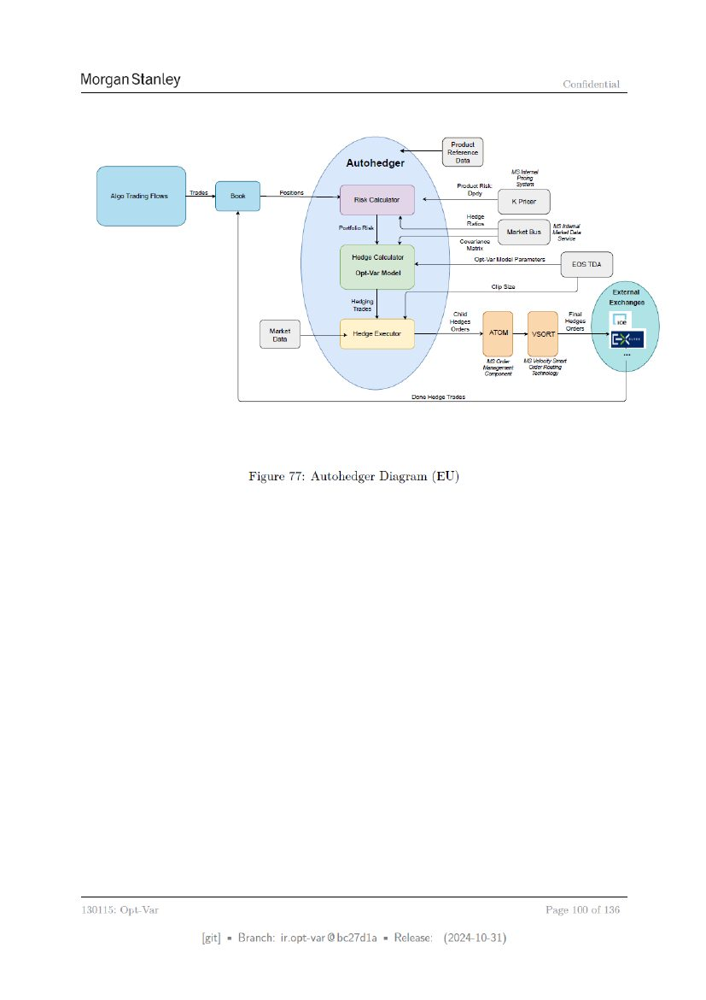
Figure 77: Autohedger Diagram (EU)
Figure 80 - page 106
{kind=link}
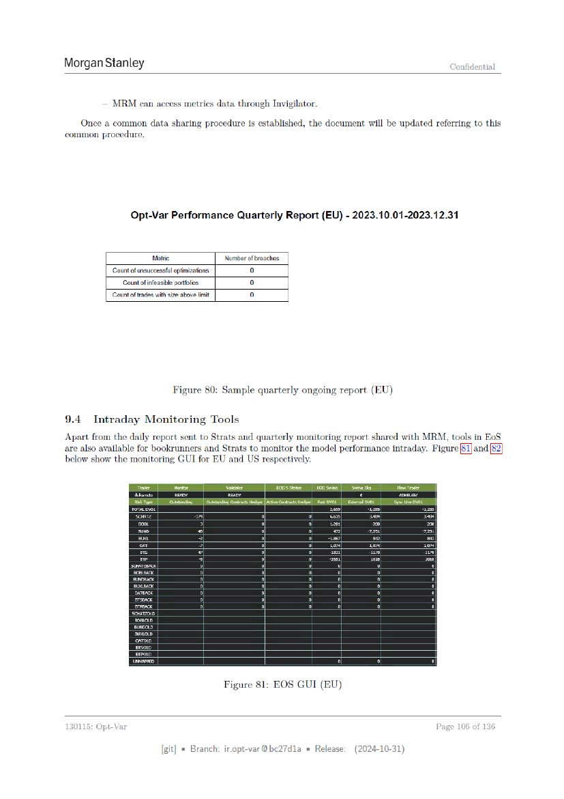
Figure 80: Sample quarterly ongoing report (EU)
Figure 81 - page 106
Figure 81: EOS GUI (EU)
Figure 82 - page 107

Figure 82: EOS GUI (US)
Figure 83 - page 110
{kind=link}
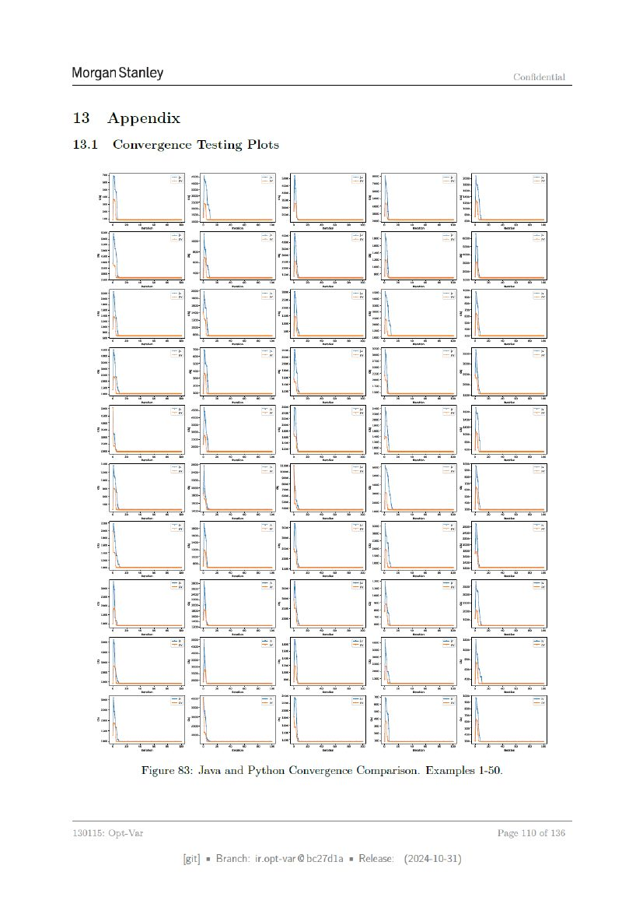
Figure 83: Java and Python Convergence Comparison. Examples 1-50.
Figure 84 - page 111
{kind=link}
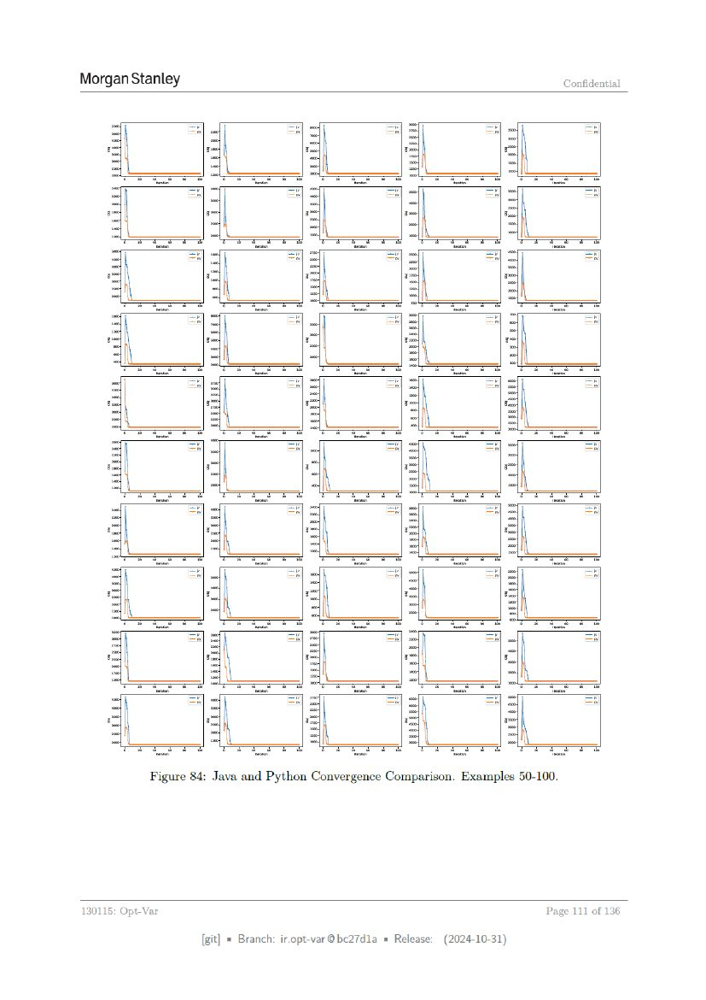
Figure 84: Java and Python Convergence Comparison. Examples 50-100.
Figure 85 - page 112
{kind=link}
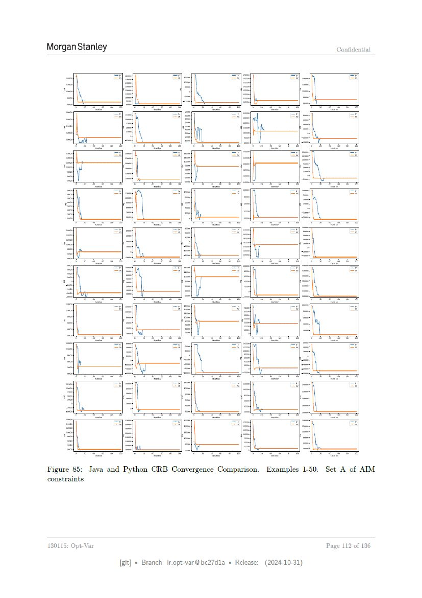
Figure 85: Java and Python CRB Convergence Comparison. Examples 1-50. Set A of AIM constraints
Figure 86 - page 113
{kind=link}
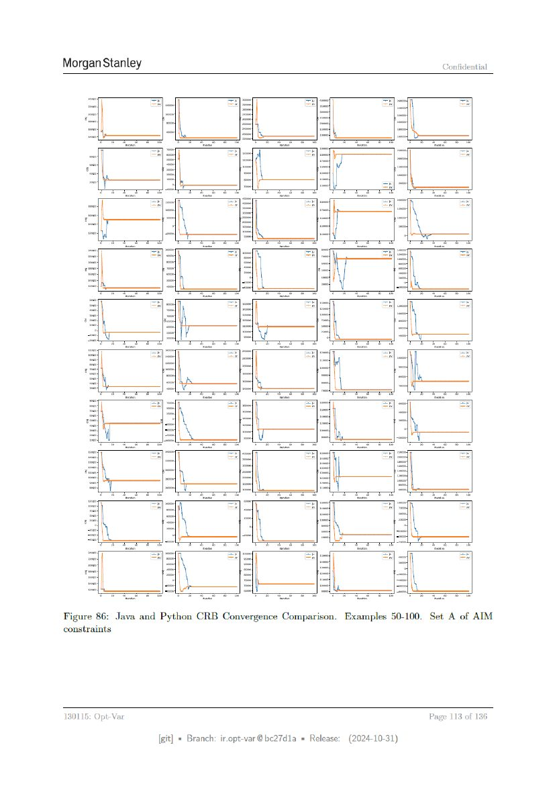
Figure 86: Java and Python CRB Convergence Comparison. Examples 50-100. Set A of AIM constraints
Figure 87 - page 114
{kind=link}
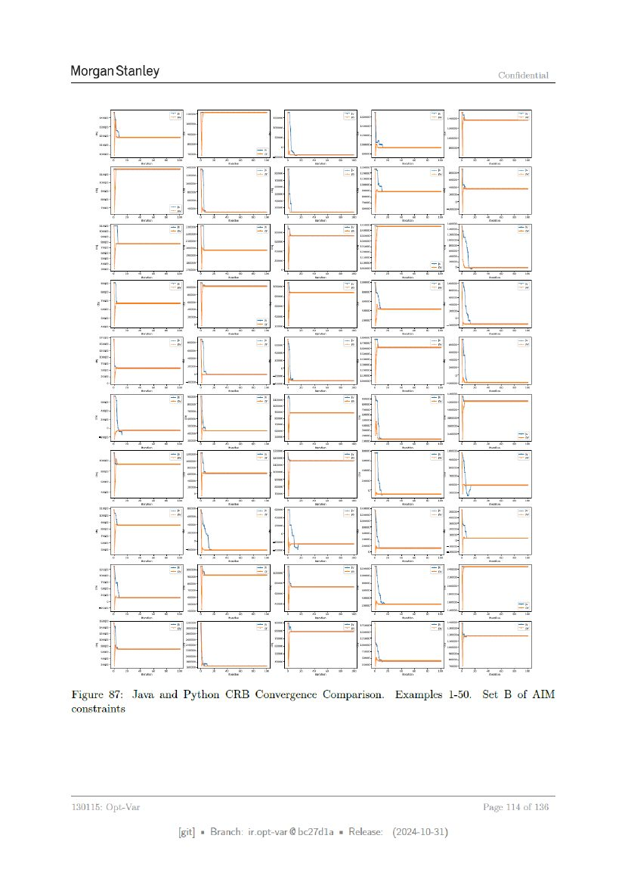
Figure 87: Java and Python CRB Convergence Comparison. Examples 1-50. Set B of AIM constraints
Figure 88 - page 115
{kind=link}
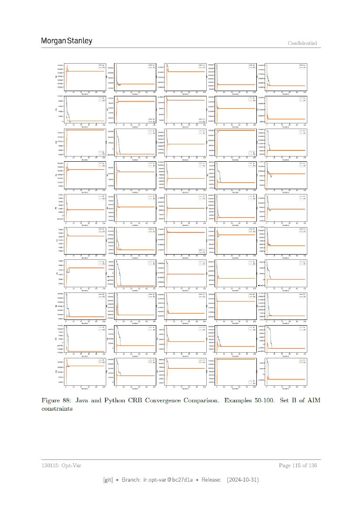
Figure 88: Java and Python CRB Convergence Comparison. Examples 50-100. Set B of AIM constraints
Figure 89 - page 116

Figure 89: Comparison of the objective function values Fy after hedging using Opt-Var and simple hedging strategy for different risk aversion \ values. Examples 1-20.
Figure 90 - page 117

Figure 90: Comparison of the objective function values F, after hedging using Opt-Var and simple hedging strategy for different risk aversion \ values. Examples 21-40.
Figure 91 - page 118

Figure 91: Comparison of the objective function values F, after hedging using Opt-Var and simple hedging strategy for different risk aversion \ values. Examples 41-60.
Figure 92 - page 119

Figure 92: Comparison of the objective function values F, after hedging using Opt-Var and simple hedging strategy for different risk aversion \ values. Examples 61-80.
Figure 93 - page 120

Figure 93: Comparison of the objective function values F, after hedging using Opt-Var and simple hedging strategy for different risk aversion \ values. Examples 81-100.
Figure 94 - page 121

Figure 94: Comparison of the portfolio variance values after hedging using Opt-Var versus no hedge for different risk aversion \ values. Examples 1-20.
Figure 95 - page 122

Figure 95: Comparison of the portfolio variance values after hedging using Opt-Var versus no hedge for different risk aversion \ values. Examples 21-40.
Figure 96 - page 123

Figure 96: Comparison of the portfolio variance values after hedging using Opt-Var versus no hedge for different risk aversion \ values. Examples 41-60.
Figure 97 - page 124

Figure 97: Comparison of the portfolio variance values after hedging using Opt-Var versus no hedge for different risk aversion \ values. Examples 61-80.
Figure 98 - page 125
{kind=link}
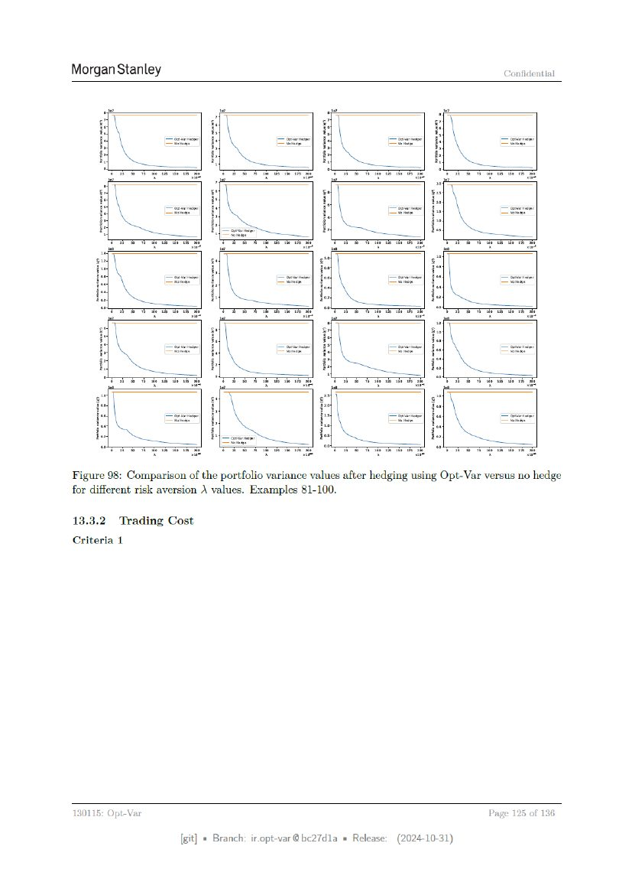
Figure 98: Comparison of the portfolio variance values after hedging using Opt-Var versus no hedge for different risk aversion values. Examples 81-100.
Figure 99 - page 126
{kind=link}
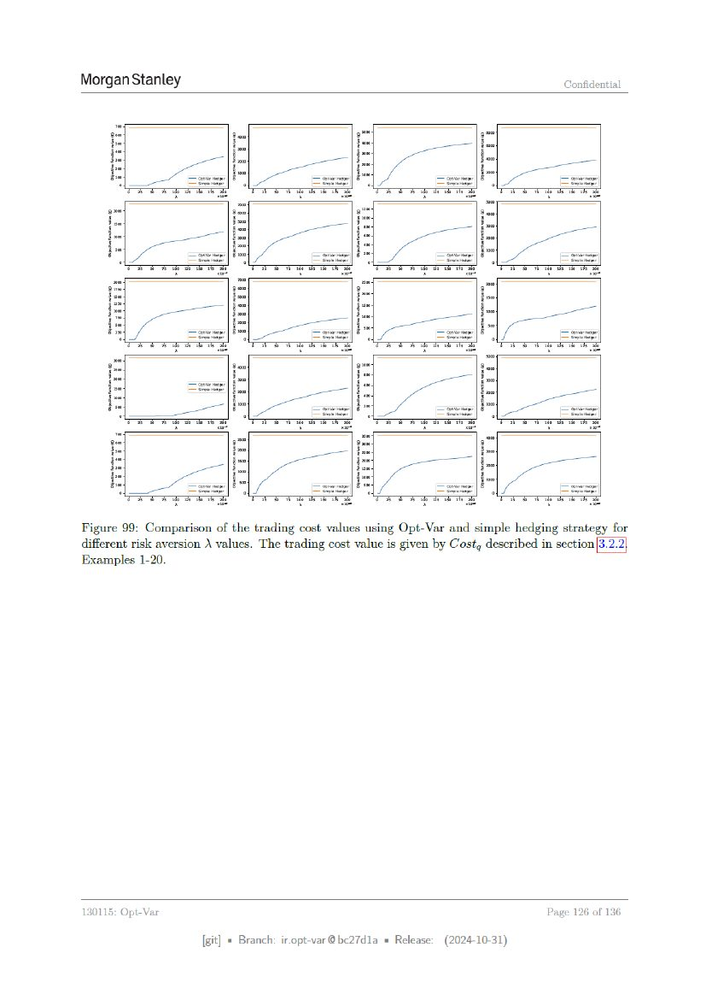
Figure 99: Comparison of the trading cost values using Opt-Var and simple hedging strategy for different risk aversion A values. The trading cost value is given by Costg described in section Examples 1-20.
Figure 100 - page 127

Figure 100: Comparison of the trading cost values using Opt-Var and simple hedging strategy for different risk aversion \ values. The trading cost value is given by Costg described in section|3.
Figure 101 - page 128
{kind=link}
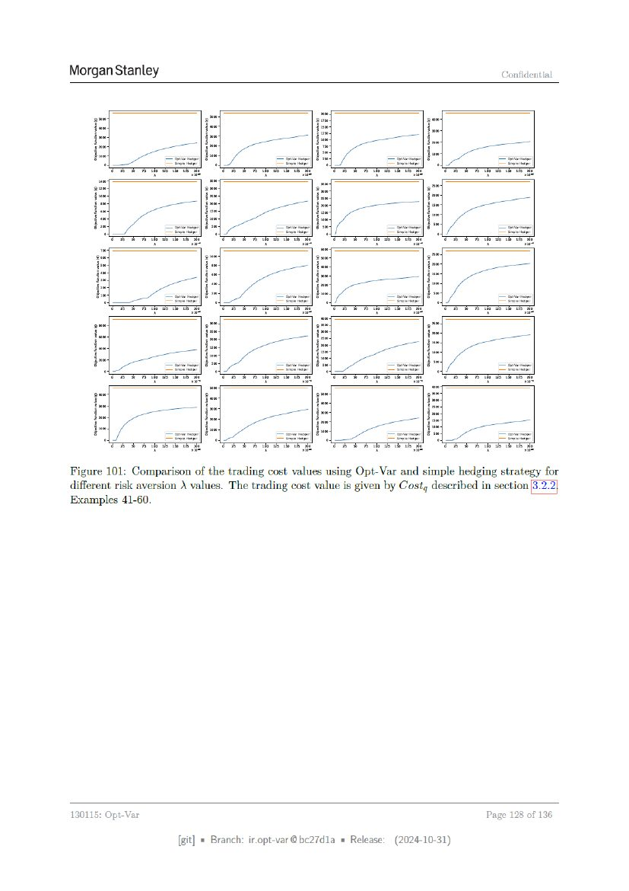
Figure 101: Comparison of the trading cost values using Opt-Var and simple hedging strategy for different risk aversion A values. The trading cost value is given by Costg described in section Examples 41-60.
Figure 102 - page 129
{kind=link}
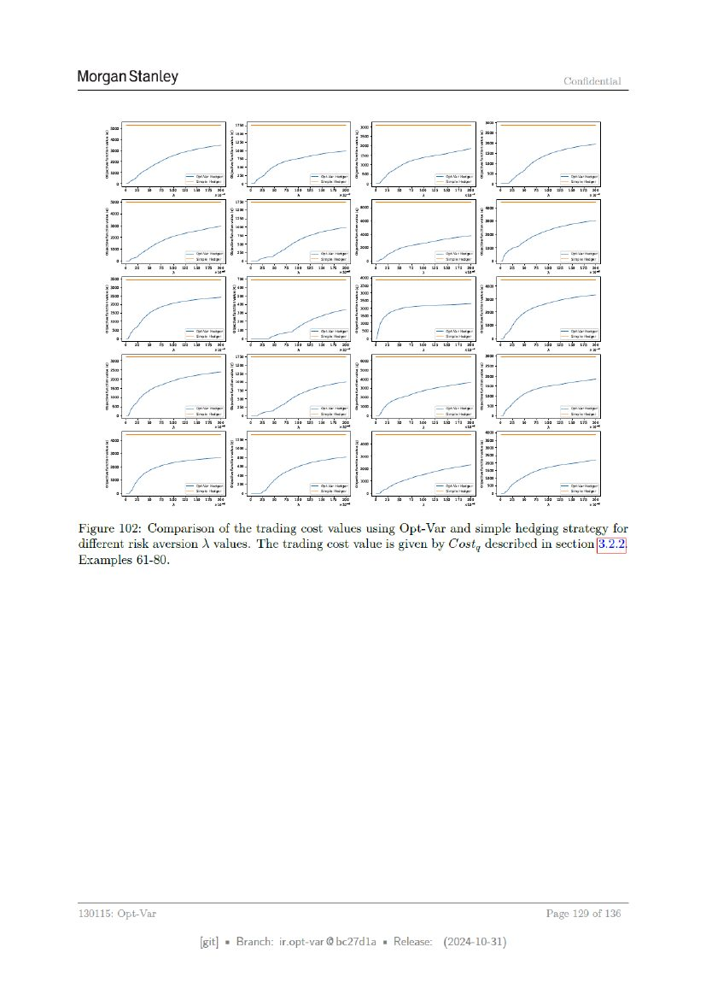
Figure 102: Comparison of the trading cost values using Opt-Var and simple hedging strategy for different risk aversion A values. The trading cost value is given by Cost, described in section|3.2.2| Examples 61-80.
Figure 103 - page 130
{kind=link}
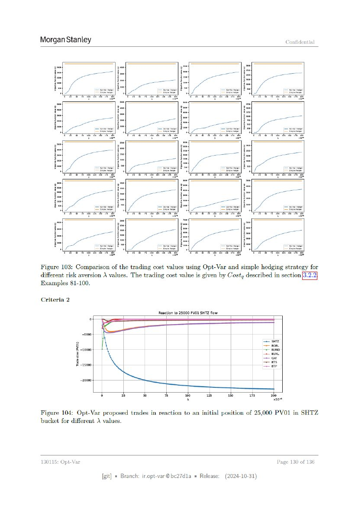
Figure 103: Comparison of the trading cost values using Opt-Var and simple hedging strategy for different risk aversion A values. The trading cost value is given by Costg described in section Examples 81-100.
Figure 104 - page 130
Figure 104: Opt-Var proposed trades in reaction to an initial position of 25,000 PVO1 in SHTZ bucket for different values.
Figure 105 - page 131
{kind=link}
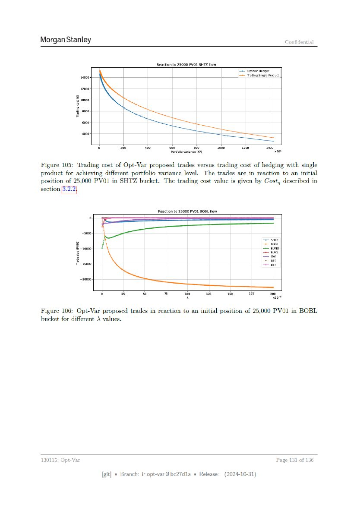
Figure 105: Trading cost of Opt-Var proposed trades versus trading cost of hedging with single product for achieving different portfolio variance level. The trades are in reaction to an initial position of 25,000 PV01 in SHTZ bucket. The trading cost value is given by Cost, described in section [3.2.2]
Figure 106 - page 131
Figure 106: Opt-Var proposed trades in reaction to an initial position of 25,000 PVO1 in BOBL bucket for different values.
Figure 107 - page 132
{kind=link}
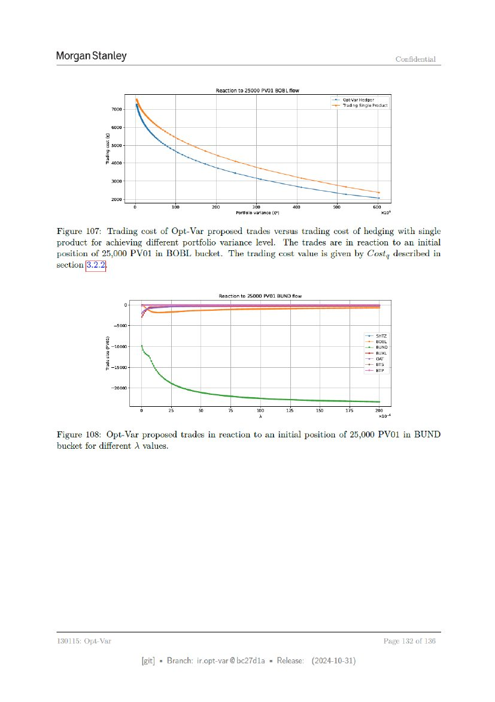
Figure 107: Trading cost of Opt-Var proposed trades versus trading cost of hedging with single product for achieving different portfolio variance level. The trades are in reaction to an initial position of 25,000 PVO1 in BOBL bucket. The trading cost value is given by Costg described in sectio
Figure 108 - page 132
Figure 108: Opt-Var proposed trades in reaction to an initial position of 25,000 PVO1 in BUND bucket for different values.
Figure 109 - page 133
{kind=link}
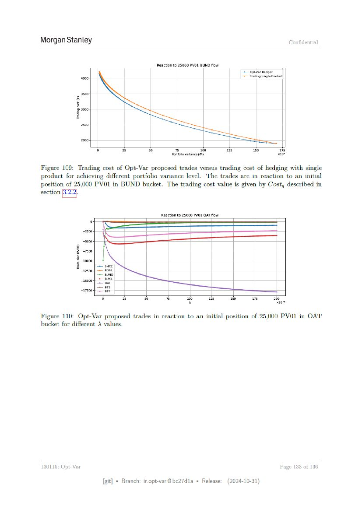
Figure 109: Trading cost of Opt-Var proposed trades versus trading cost of hedging with single product for achieving different portfolio variance level. The trades are in reaction to an initial position of 25,000 PVO1 in BUND bucket. The trading cost value is given by Costg described in section B23
Figure 110 - page 133
Figure 110: Opt-Var proposed trades in reaction to an initial position of 25,000 PVO1 in OAT bucket for different values.
Figure 111 - page 134
{kind=link}
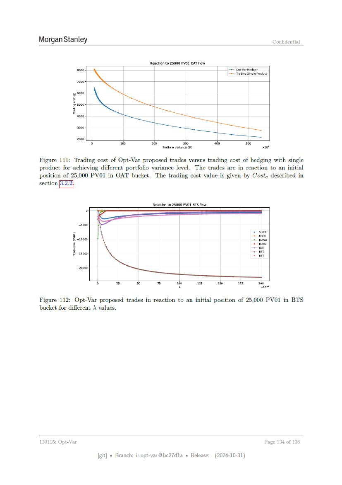
Figure 111: Trading cost of Opt-Var proposed trades versus trading cost of hedging with single product for achieving different portfolio variance level. The trades are in reaction to an initial position of 25,000 PVO1 in OAT bucket. The trading cost value is given by Costy described in sectio!
Figure 112 - page 134
Figure 112: Opt-Var proposed trades in reaction to an initial position of 25,000 PVO1 in BTS bucket for different A values.
Figure 113 - page 135

Figure 113: Trading cost of Opt-Var proposed trades versus trading cost of hedging with single product for achieving different portfolio variance level. The trades are in reaction to an initial position of 25,000 PVO1 in BTS bucket. The trading cost value is given by Cost, described in section [3.2.2]
Figure 114 - page 135
Figure 114: Opt-Var proposed trades in reaction to an initial position of 25,000 PV01 in BTP bucket for different values.
Figure 115 - page 136
{kind=link}
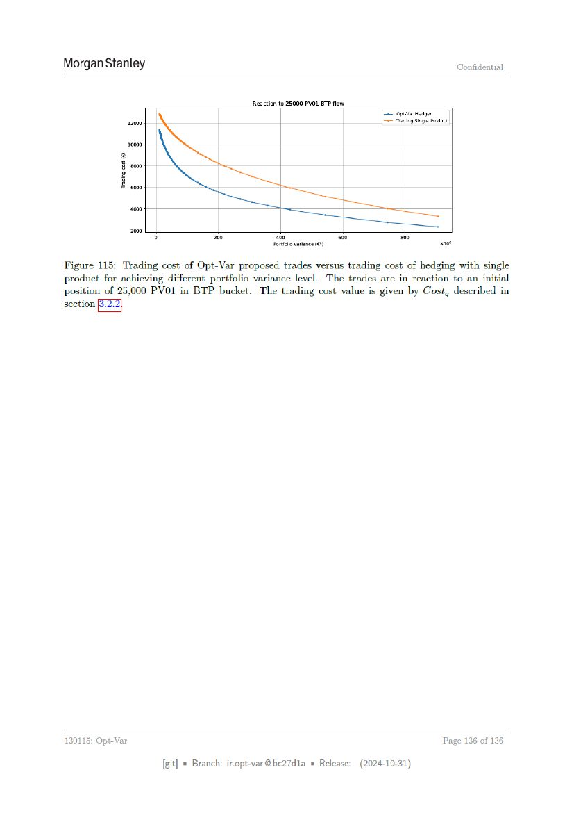
Figure 115: Trading cost of Opt-Var proposed trades versus trading cost of hedging with single product for achieving different portfolio variance level. The trades are in reaction to an initial position of 25,000 PVO1 in BTP bucket. The trading cost value is given by Cost, described in section [3.2.2]